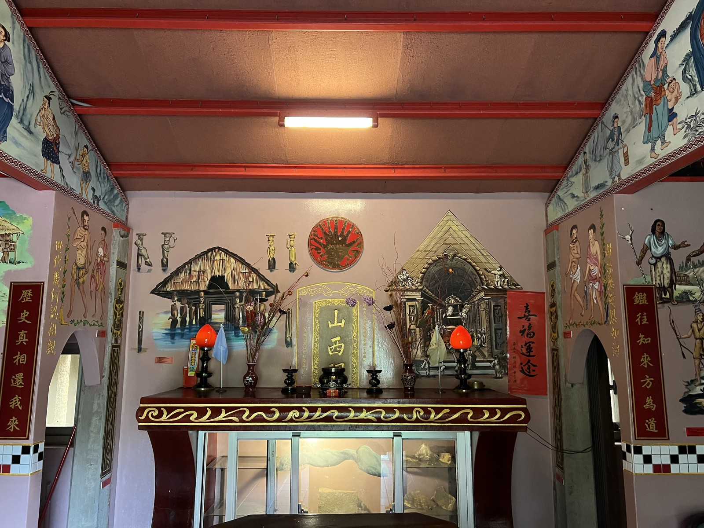
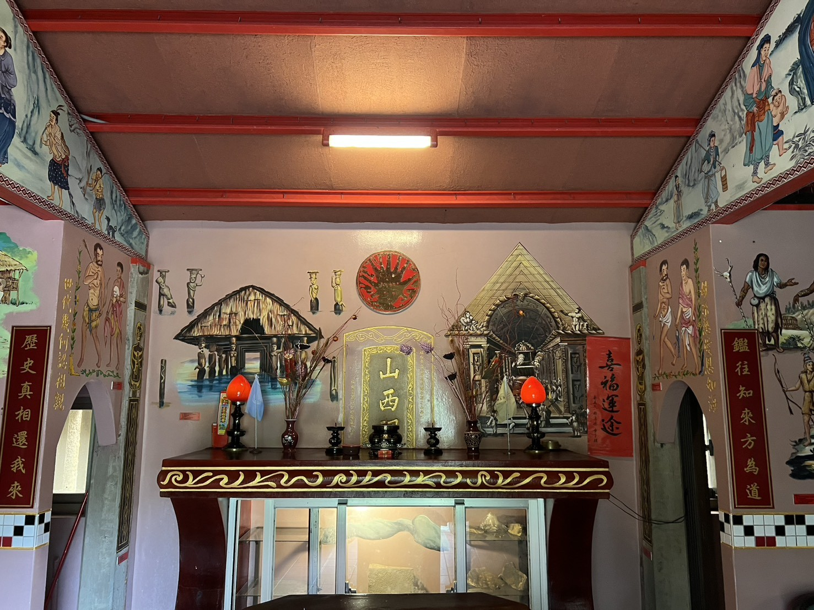

2025年2月17日，在冬寒料峭與毛毛細雨中，我於福隆火車站下車。身旁的旅人或許都是來觀光遊玩的，而我則是懷著一份對歷史的敬畏之心，租了一輛鐵馬，隻身奔馳在台2線（北部濱海公路）上。
從田寮洋街轉入後，沿途經過貢寮區第九公墓，以為走錯路幾次看地圖，終於抵達了「雙溪」彎道處這座承載著無數歷史記憶的巴賽族祖厝。
巧遇與連結的契機
抵達時，就看見祖厝門口掛著大大的標示，寫著 「歡迎入內參觀」。

其實在出發前，我並沒有事先和「凱達格蘭工作室」的林勝義先生取得聯絡，原本心想也許可遇不可求。幸好，剛好門口也標示著聯絡電話。我便抱著一試的心情當場撥了過去，非常幸運地直接與林先生取得了聯繫，並約定好了後日得以親自會面。

關於巴賽人的 Sanasai（山西）傳說
根據文獻與口傳歷史，巴賽人（Basay）著名的 Sanasai（山西）傳說 中，祖先據信是從龍門河口一帶登陸上岸的。
在聚落的發展脈絡上： 1. 早期先形成了夾於河道與海岸山谷之間的「舊社」。 2. 隨著人口與生活形態轉變，後來才逐漸向內陸遷移，發展出位於內陸河道邊的「新社」。
今日所探訪的新社山西祠，正是這段漫長歷史與文化在土地上留下的珍貴見證。